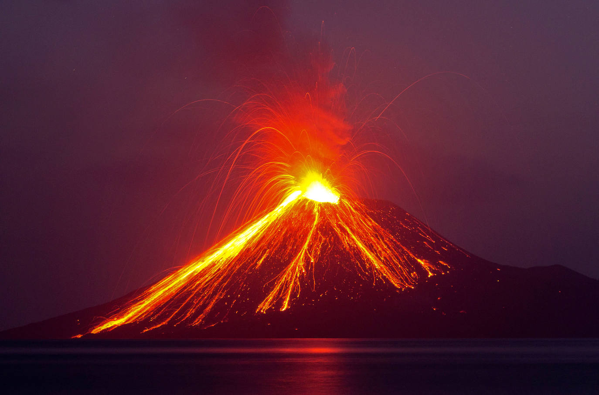
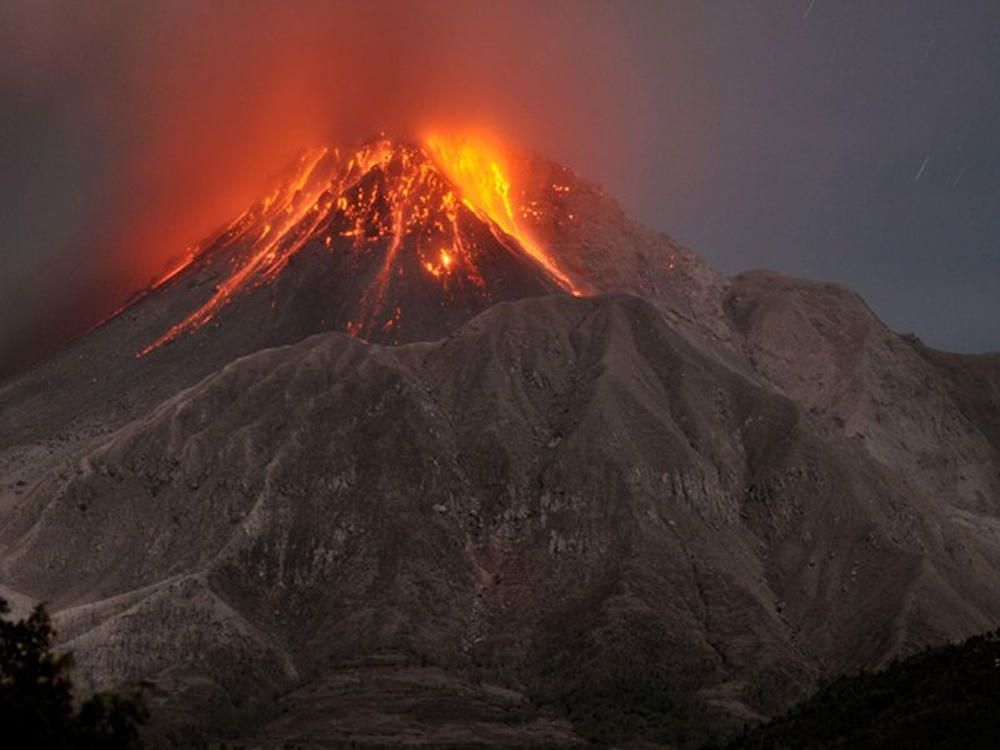

Volcanes activos
Los volcanes activos son aquellos que pueden entrar en actividad eruptiva en cualquier momento, es decir, que permanecen en estado de latencia. Esto ocurre con la mayoría de los volcanes, pues ocasionalmente entran en actividad, permaneciendo en reposo la mayor parte del tiempo. El período de actividad eruptiva puede durar desde una hora hasta varios años, como fue el caso del volcán de Pacaya y del Irazú. A día de hoy, no se ha descubierto ningún método seguro para predecir las erupciones.

Volcanes durmientes o inactivos
Los volcanes durmientes o inactivos son aquellos que mantienen ciertos signos de actividad, como la presencia de aguas termales, y han entrado en actividad esporádicamente. Dentro de esta categoría suelen incluirse las fumarolas y los volcanes con largos períodos de inactividad entre una erupción y otra. Un volcán se considera durmiente si desde hace siglos no ha tenido una erupción.

Volcanes extintos
Los volcanes extintos son aquellos cuya última erupción fue registrada hace más de 25 000 años. Sin embargo, no se descarta la posibilidad de que puedan despertar y liberar una erupción más fuerte que la de un volcán que está activo, causando grandes desastres. También se les llama extintos cuando han sido alejados de su fuente de magma, perdiendo poco a poco su actividad, esto sucede únicamente en volcanes de punto caliente, a diferencia de los volcanes de zonas de subducción.